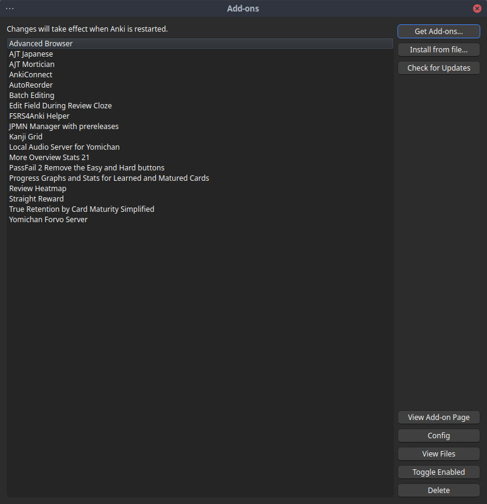
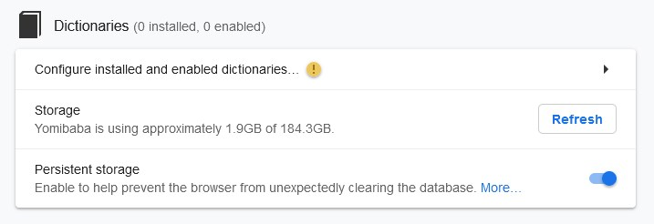

Configuration
Configuration pour l'apprentissage du japonais
Cette section est concernée avec la mise en place de divers outils que nous allons utiliser pour apprendre le japonais, les plus importants étant Anki et Yomitan. Cette section est divisée en trois sous-sections: Anki, Yomitan et Minage. Les noms devraient être clairs si vous avez lu le guide principal.
Les systèmes d'exploitation que j'utilise sont EndeavourOS (une distribution dérivée de Arch Linux) et Windows 10 en dualboot. Je fais la plupart des choses liées à Anki sur EndeavourOS et la majorité de mon minage sur Windows 10. Cette installation n'a pas été testé sur d'autres systèmes. Si vous désirez miner des visual novels sur Linux, je vous conseille de lire cette page.
Configuration d'Anki
- Anki, un système de répétitions espacées
- Installer Anki
- Changer les paramètres
- Installer les polices
- Installer les plugins de base
- Activer FSRS
- Checklist pour Anki
Le premier outil que l'on va installer et configurer est Anki. Mais d'abord, qu'est-ce que Anki ?
Anki, un système de répétitions espacées
L'idée derrière Anki est probablement plus vieille qu'Internet. Une méthode très populaire pour mémoriser quoi que ce soit est l'utilisation de carte mémoire, généralement appelé flashcard en anglais. Vous prenez un bout de papier, vous écrivez une question sur une face et de l'autre côté vous écrivez la réponse. Pour faire simple, Anki est une librairie virtuelle de paquets (généralement appelés decks) de cartes mémoires (parfois simplement appelées cartes). Anki peut être utilisé pour apprendre tout ce qui requiert de la mémorisation, 暗記 anki étant le terme japonais pour mémorisation. Ce n'est pas juste utile aux personnes apprenant des langues étrangères mais aussi aux enthousiastes de la géographie et aux étudiants de médecine.
Malheureusement, la configuration de base d'Anki souffre de plusieurs problèmes. Ces problèmes sont bien documentés et vous pouvez lire cet article pour en savoir plus. Dans ce qui suit, je vais essayer de résumer les choses pour les gens qui ne veulent pas lire plusieurs guides et veulent une installation simple pour miner du contenu japonais. Je ne prétends pas proposer quelque chose d'original, c'est simplement une amalgation de plusieurs ressources que j'apprécie et que j'ai utilisées pour créer ma propre installation, comme ce guide par exemple. Comme dit précédemment, j'utilise Linux et Windows. Je n'utilise pas MacOS et je ne peux rien dire sur ce système d'exploitation. J'espère que ce guide vous sera utile même si vous n'utilisez pas la même configuration que moi.
Installer Anki
Pour install Anki sur Windows aller à la page principale pour Anki et cliquer sur le bouton de téléchargement bleu. Si vous êtes sur Linux, votre distribution devrait avoir un package disponible.
Suivez les instructions pour votre système et vérifiez bien que vous installer la dernière version. Il y a deux options possibles pour Anki: qt5 and qt6. Prenez la version qt6, elle est meilleure et tous nos plugins sont compatibles. Une fois ceci fait, lisez cette explication sur la terminologie de Anki.
Changer les paramètres
La dernière chose à faire avant de pouvoir utiliser Anki pour réviser nos cartes est de changer les paramètres d'usine. Vous pouvez trouver mes paramètres détaillés ici. Pour accéder à ce menu, aller sur Tools puis Preferences.
La seconde partie des paramètres est pour les paramètres de deck, que vous pouvez utiliser soit pour Kaishi 1.5k soit pour votre deck de minage, si vous avez déjà terminé Kaishi 1.5k. Vous pouvez trouver les paramètres de deck ici. Une explication pour l'ajout d'une étape d'apprentissage (ce qui est la différence principale avec les paramètres de base d'Anki) se trouve ici en plus de quelques autres points intéressants sur la configuration d'Anki en général.
Installer les polices
Je vous suggère fortement de trouver une collection de police que vous appréciez. J'utilise personnellement la famille de police japonaise Noto. Au final, c'est à vous de décider mais je vous conseille de choisir une police que vous n'aurez pas de problèmes à regarder pendant des heures, parce que ça va arriver. Pour installer cette famille sur Windows, faites un clic droit sur le fichier et installez-le.
Installer les plugins de base
Téléchargez et installez tous les plugins que j'utilise ici. Pour ce faire, aller dans Anki > Tools et ensuite View Files en bas à gauche. Cela ouvre un dossier. Il faut extraire l'archive téléchargée ci-dessus dans ce dossier. Si vous voulez simplement une liste des plugins que j'ai, continuer de lire cette section.
Anki peut être modifié de deux manières différentes: La première consiste à changer les paramètres dans le menu qui peut se trouver dans l'application elle-même, la seconde consiste à télécharger des plugins additionnels (en anglais appelés add-ons) que vous pourrez trouver sur la page officielle de plugins d'Anki. Le premier problème avec la version standard de Anki est le problème "du facteur de facilité", discuté ici. Le problème apparaît quand l'on rate une carte de manière répétée ce qui réduit le facteur de facilité de cette carte de plus en plus. Avec les paramètres de base, la seule manière d'augmenter ce facteur est de presser sur "Easy" (facile). Mais il n'est pas claire pourquoi cette distinction est utile, et il n'est pas clair non plus ce que "Hard" (difficile), "Good" (bon) et "Easy" (facile) représente quand on apprend une langue. Nous allons ignorer ce problème entièrement en changeant la manière dont Anki gère le facteur de facilité. Pour ce faire. nous allons utiliser plusieurs plugins différents.
Plugins généraux
Ces plugins sont utiles pour tout le monde et pour chaque decks.
Advanced Browser
Comme son nom l'implique, ce plugin rajoute plusieurs fonctionnalités au Browser de Anki, la fenêtre ou l'on peut changer les cartes et modifier l'apparence des decks.
Advanced Copy Field
Ce plugin vous permet de remplacer et de copier des choses depuis vos champs d'Anki. Il vous permet aussi de créer des modèles customisés depuis les champs eux-mêmes.
AutoReorder
AutoReorder est un plugin qui vous permet de ré-ordonner les cartes basé sur un champ de fréquence. Il sera utilisé en conjonction avec l'ordonneur par fréquence de Marv pour nous permettre d'utiliser des dictionnaires de fréquence pour miner efficacement et avoir les mots les plus fréquents arriver en premier.
Batch Editing
Batch Editing vous permet de modifier des paquets de plusieurs cartes à la fois. C'est très utile quand on veut ajouter quelque chose à toutes les cartes en une fois, comme une image.
Edit Field During Review (Cloze)
Edit Field During Review (Cloze) vous permet de modifier une carte pendant que vous la révisez.
More Overview Stats 2.1
More Overview Stats 2.1 vous donne plus de statistiques sur votre deck.
Pass/Fail
Ce plugin est optionnel. Il enlève les boutons "Hard" et "Easy" entièrement, ce qui relève plus d'une question de goût. Personnellement, je l'utilise.
Progress Graphs
Ce plugin rajoute des graphes pour vous permettre de mieux comprendre votre utilisation d'Anki.
Study Time Stats
Ce plugin ajoute quelques statistiques de temps sur le menu principal d'Anki ce qui est utile pour voir combien de temps vous avez passé sur Anki par exemple.
Review Heatmap
Review Heatmap vous permet de voir vos progrès sur la page principale d'Anki en vous montrant quels jours vous avez révisé et combien de cartes vous avez vu.
Straight Reward ou FSRS4Anki Helper
Straight Reward résout le problème mentionné ci-dessus en traitant "Hard", "Good" et "Easy" comme des succès, et c'est l'enchaînement de succès qui augmente le facteur de facilité, ce qui vous fait voir cette carte de moins en moins (puisque vous n'arrêtez pas de faire juste, vous en avez moins besoin.) Si vous utilisez FSRS (voyez plus bas), ce plugin n'a pas d'effet sur Anki et n'est pas nécessaire.
Si vous utilisez FSRS, installez FSRS4Anki Helper à la place. Ce plugin vous permettra de modifier quelques paramètres pour FSRS.
True Retention by Card Maturity Simplified
Ce plugin vous donne des informations précises sur votre rétention de cartes jeunes et matures.
Plugins spécifiques au japonais
Ces plugins sont utilisés spécifiquement pour l'apprentissage du japonais sur Anki.
AJT Japanese ou AJT Japanese for JP Mining Note
AJT Japanese va être utilisé pour générer des furigana sur les mots plus tard quand vous commencerez à miner. Les furigana sont basiquement la lecture des kanji que vous pouvez rajouter sur les kanji pour expliquer leur lecture à quelqu'un qui ne les connait pas. Si vous utilisez mon installation pour le minage, installez AJT Japanese for JP Mining Note.
AnkiConnect
Ce plugin est de loin le plus important pour le minage. Il nous permet d'utiliser Yomitan pour créer des cartes automatiquement comme nous allons le voir plus.
Kanji Grid Kuuube
Kanji Grid est un plugin assez vieux mais qui est toujours utile et vous permet d'obtenir une table des kanji et de les classer en fonction de votre compréhension desdits kanji. Il n'est pas strictement nécessaire mais voir la table qui se remplit au fil de votre apprentissage est particulièrement satisfaisant. Les mises à jour d'Anki 2.3.x ne permettent pas d'utiliser le plugin original mais heureusement Kuuube a rendu le plugin compatible avec les versions plus récentes et a rajouté plusieurs nouvelles fonctionnalités en rendant le tout plus stable.
Yomichan Forvo Server et Local Audio Server for Yomichan
Finalement, Yomichan Forvo Server et Local Audio Server for Yomichan sont utilisés pour rajouter une base de donnée audio de Forvo à Yomitan localement sur votre machine, vous donnant accès instantanément à des fichiers audio qui fixent plusieurs erreurs avec les fichiers originaux de Yomitan (provenant généralement de JapanesePod101, qui a quelques erreurs.) Suivez simplement les étapes écrites sur cette page pour avoir une installation fonctionnelle.

{kind=link}
Activer FSRS
FSRS est une alternative à l'algorithme SM-2 qui gère la révision des cartes dans Anki. Je vous recommande très, très fortement de l'utiliser. Pour ce faire, en supposant que vous soyez sur Anki 23.10 ou plus, vous pouvez simplement ouvrir les options du deck en question et de descendre jusqu'à la section Advanced. Vous pouvez ensuite simplement cliquer sur Enable FSRS. Je vous suggère sincèrement de lire ce tutoriel pour vous familiariser avec l'algorithme et voir comment il fonctionne.
Checklist pour Anki
- Installer Anki.
- Changer les paramètres.
- Installer les polices d'écritures.
- Installer les plugins.
- Activer FSRS.
Configuration de Yomitan
Maintenant qu'Anki a été mis en place, il est temps de se concentrer sur le deuxième outil crucial à l'apprentissage du japonais: Yomitan. Yomitan est un projet dérivé de l'ancien plugin Yomichan que vous pouvez installer dans Firefox ou Google Chrome pour utiliser des dictionnaires japonais lorsque vous surfez sur internet. Vous pouvez donc voir les définitions de mots sur lesquels vous passez le curseur. Le projet original s'est arrêté mais une équipe de TMW a décidé de reprendre le projet en le nommant Yomitan.
Installer Yomitan
Pour installer Yomitan, vous pouvez prendre la version Chrome ou la version Firefox. Une fois installé, une page de guide devrait s'ouvrir. Lisez-la complétement avant de continuer pour voir comment Yomitan fonctionne.
Ajouter des dictionnaires
Yomitan requiert des dictionnaires externes pour fonctionner. Pour installer ces dictionnaires, aller à Dictionaries > Configure installed and enabled dictionaries... > Import. Notez que pour l'instant, tous les dictionnaires sont soit en anglais, soit en japonais.

{kind=link}
Les dictionnaires vont prendre un peu de temps à être importés, c'est normal.
Nous allons utiliser les dictionnaires suivants:
Dictionnaires Japonais-Anglais
Nous allons utiliser trois dictionaires japonais-anglais. Le premier est un dictionnaire standard qui a plusieurs formes, synonymes, antonymes ainsi que des phrases d'exemple. Le deuxième a des exemple pour différentes définitions pour un même mot ainsi que des phrases d'exemple. Le troisième a des noms propres japonais.
Jitendex ou JMdict (examples)
JMdict est un dictionnaire J-E développé par StephenMK(https://github.com/stephenmk). Jitendex est la continuation de ce projet et vise à supporter des types de format autre que juste Yomitan. Certains utilisateurs préfèrent l'apparence du premier dictionaire. Je vous suggère de télécharger les deux, d'essayer les deux et de regarder celui que vous préférez. Vous trouverez une comparaison directe ici.
JMnedict
Un dictionaire de nom japonais aussi créé par StephenMK. Puisque les noms japonais tendent à avoir plusieurs lectures de kanji, ce dictionnaire est fortement recommandé.
Il pourrait être intéressant pour les personnes n'ayant pas un niveau d'anglais très élévé d'installer cette traduction automatique de JMdict. Bien que loin d'être parfaite, couplé à Jitendex elle peut être très utile à des étudiants français du japonais. N'oubliez pas de l'activer dans l'écran des dictionnaires dans Yomitan.
Dictionnaires de grammaire
Ce dictionnaire nous aide à discerner et comprendre différents points de grammaire.
Dictionary of Japanese Grammar
Basé sur la série des Dictionary of Japanese Grammar.
Dictionnaires Japonais-Japonais
Ces dictionnaires sont monolangues, c'est à dire Japonais-Japonais.
三省堂 8th Ed
Mon dictionnaire J-J préféré, en particulier pour les débutants. Il a de très bonnes définitions qui ne sont pas trop longues.
デジタル大辞泉
Un autre très bon dictionnaire monolangue, mon deuxième préféré. Il a une bonne couverture.
大辞林 4th Ed
Je n'aime pas particulièrement ce dictionnaire, mais il a une très bonne couverture, en d'autres termes il aura souvent des définitions pour des mots qui n'apparaîtront pas dans les deux autres dictionnaires.
Dictionnaires spécialisés
Ces dictionnaires sont aussi Japonais-Japonais mais ils se concentrent sur un sujet particulier comme des expressions communes, des différences entre mots semblables, du japonais classique ou des dialectes.
漢字ペディア同訓異義
Un dictionnaire qui vous aidera à différencier les multiples versions d'un même mot écrit avec différents kanji, par exemple 見る vs. 観る vs. 診る.
Pixiv Light
La version light du dictionnaire Pixiv qui est très utile pour lire différents médias japonais, car il aura le nom des différents personnages de ce que vous lirez, généralement.
実用日本語表現v2
Un dictionnaire d'expressions communes, généralement très utile.
Weblio古語辞典
Dictionnaire de japonais classique. Facultatif.
全国方言辞典
Dictionnaire de dialectes. Facultatif.
Dictionnaires de kanji
Ces dictionnaires vont nous aider à comprendre les kanji, en nous donnant des noms communément associés à un kanji en particulier, leur tracé ainsi que d'autres statistiques.
Kanji Jitenon
De Kanji Jitenon, un site très utile pour les kanji.
Dictionnaires d'accent chromatique
Ces dictionnaires nous donnent des informations sur l'accent chromatique des mots.
NHK2016
Du livre NHK2016 qui discute de l'accent chromatique de nombreux mots ainsi que de règles générales sur l'accent.
Dictionnaires de fréquence
Finalement, ces dictionnaires nous donne des informations sur la fréquence de divers mots. Cela nous sera utile pour classifier nos nouveaux mots par fréquence. Je vous recommande de tous les utiliser car ils vous permettront d'avoir une fréquence plus diversifiée pour la classification, mais si vous décidez d'en prendre qu'un seul, prenez JPDB.
JPDB Frequency
Narou Frequency
Novels Frequency
VN Frequency
Anime & J-drama Frequency
Wikipedia Frequency
BCCWJ
CC100
Innocent Ranked
Autres dictionnaires possibles
Ces dictionnaires ci-dessus seront ceux que nous allons utiliser, mais il existe bien d'autres dictionnaires intéressants que vous pouvez voir ici. Si vous parlez allemand, il y a notamment une section Japonais-Allemand grâce à Julian. Un autre endroit pour trouver des dictionnaires est la collection de shoui.
Et si je n'ai pas envie d'utiliser tous ces dictionnaires?
Certaines personnes préfèrent avoir un setup plus compact de dictionnaires. C'est compréhensible, bien que je pense avoir recommandé uniquement des dictionnaires vraiment utiles. Si vous préférez un setup très compact, je vous suggère d'utiliser les dictionnaires suivants:
- JMdict (ou Jitendex)
- JMnedict
- 三省堂 8th Ed
- Kanji Jitenon
- NHK2016
- JPDB Frequency
Configurer Yomitan
Vous pouvez tout simplement trouver mes paramètres dans le fichier ici. Pour l'importer, aller sous Backup > Import Settings Je ne peux pas garantir que le reste de l'installation fonctionne si vous ne n'importer pas ce fichier, car plusieurs choses importantes dépendent des paramètres dans Yomitan, notamment la portion de minage de ce guide.
Comme je l'ai dit précédemment, je vous suggère de prendre un peu de temps pour lire le manuel d'usage et voir comment Yomitan fonctionne par vous-même. Ceci fait, vous pourrez simpler annuler le message qui vient chaque fois que vous ouvrez votre navigateur web en enlevant Show usage guide on startup dans le menu de paramètres de Yomitan (pressez sur la roue dentée) sous General. Voici quelques autres options que vous pouvez changer si vous le désirez.
Scanning
Vous pouvez changer la clé par défaut pour utiliser Yomitan de Shift à quelque chose d'autre si vous le préférez. Vous pouvez aussi utiliser No Key, qui utilisera automatiquement Yomitan sur n'importe quel texte japonais que vous verrez sans avoir à presser de boutons. Cela peut rendre un peu fastidieux le fait de chercher un mot en particulier dans une mer de mots japonais, mais cela évite de devoir presser Shift constamment. Vous pouvez utiliser ce que vous préférez. J'utiliser Shift et No Key en fonction de ce que je lis.
Popup
Ici, vous pouvez décider d'utiliser Allow scanning popup content ou pas. Cela vous permet de scanner des mots dans les définitions de vos dictionnaires directement ce qui est utile quand vous lisez des dictionnaires Japonais-Japonais. Si vous activez cette option, pensez à changer Maximum number of child popups à quelque chose de plus grand comme 3 ou 5 pour pouvoir vérifier vos définitions plusieurs fois.
Audio
Vous pouvez ajuster le volume audio si c'est trop fort pour vous. Vous pouvez aussi décider d'ajouter le son automatique qui lancera directement l'audio lié à n'importe quel mot que vous scannez. C'est utile pour les dictionnaires japonais-japonais, mais je n'utilise personnellement pas cett eoption. Je vous suggère sincèrement d'installer un serveur local pour Yomitan en suivant ce guide si vous ne l'avez pas déjà fait.
Checklist pour Yomitan
Vous avez Anki et Yomitan qui fonctionnent parfaitement et vous avez terminé Kaishi 1.5k ou vous avez déjà commencé à lire ? Installer un deck de minage.